Redesign do EduConnect
Do site original analisado, aos problemas identificados, até a nova proposta de interface em um visual premium.
1Resumo
O EduConnect é um portal acadêmico com cinco telas: Dashboard, Notas, Disciplinas, Matrícula e Perfil. O visual original tinha uma base boa de organização, mas apresentava falhas de contraste, de comportamento no celular e de fluxo, além de uma identidade visual sem personalidade.
O redesign reformulou toda a interface visual, aplicando um visual premium: fundo escuro profundo, dourado como cor de ação, vidro e brilho, hierarquia tipográfica forte e componentes sofisticados. As cinco telas e todas as funcionalidades foram mantidas, e foram corrigidos os problemas de usabilidade encontrados no original.
| Item | Original | Redesign |
|---|---|---|
| Contraste do texto secundário | 2,56 : 1 (reprovado) | 6,32 : 1 a 8,83 : 1 (aprovado) |
| Telas na navegação do celular | 4 de 5 (Perfil sumia) | 5 de 5 |
| Matrícula | Aviso de sucesso sem confirmação | Revisão, limite de créditos e confirmação |
| Formulário do perfil | Só o e-mail era checado | Validação com mensagem por campo |
| Componentes e código | 1 arquivo com 441 linhas | Componentes, páginas e dados separados |
npm run build | Falhava (faltava @types/react) | Passa do zero, sem erros |
2Análise do site original
O site foi aberto e executado no navegador em 1440 px e 390 px, e o código foi lido por inteiro. Os problemas abaixo foram confirmados nesses dois momentos.
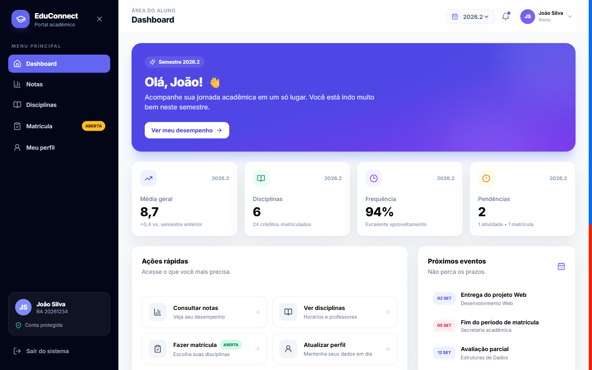
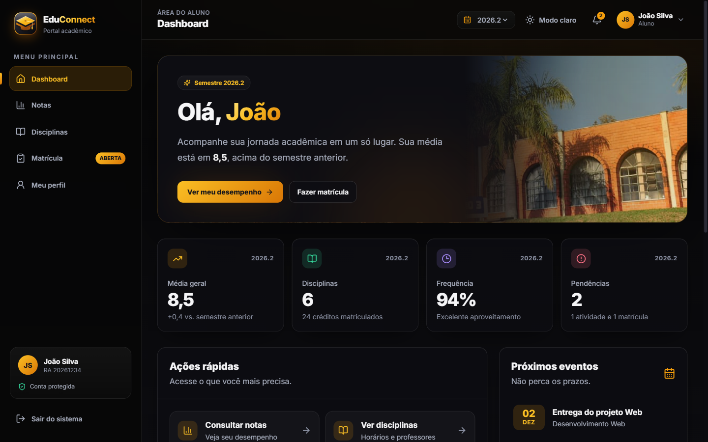
Problemas identificados
| # | Problema | Como foi confirmado | Impacto |
|---|---|---|---|
| 1 | Contraste baixo. Textos auxiliares em cinza claro sobre fundo branco. | Cor slate-400 (#94a3b8) sobre #fff = 2,56 : 1. O mínimo da WCAG é 4,5 : 1. | Difícil ler legendas, códigos e detalhes, principalmente ao ar livre. |
| 2 | Textos minúsculos. 11 ocorrências de 9, 10 e 11 px (selos, datas, mensagens de apoio). | Busca no código por text-[9px], [10px] e [11px]. | Informação importante (como o prazo urgente) quase ilegível. |
| 3 | Navegação do celular incompleta. A barra inferior mostra só 4 das 5 telas; o Perfil some. | Visto na captura de 390 px; no código, navItems.slice(0, 4). | O aluno não alcança o Perfil sem abrir o menu lateral. |
| 4 | Botão de fechar no desktop. O "X" do menu lateral aparece em telas grandes, onde o menu é fixo. | Visto na captura de 1440 px. | Controle sem função, que confunde. |
| 5 | Matrícula sem confirmação. "Continuar matrícula" mostra um aviso de sucesso na hora, sem revisão. Não há limite de créditos nem alerta de choque de horário. | Código: submit() chama só o aviso de sucesso. | Risco de o aluno achar que concluiu algo que não foi revisado. |
| 6 | Formulário do perfil com validação mínima. Só o e-mail tinha a checagem nativa do navegador; nome, telefone e cidade aceitavam qualquer valor, inclusive vazio. O botão de salvar ficava sempre ativo. | Código: submit() não valida; só type="email". | Dados incorretos e nenhuma mensagem de erro clara. |
| 7 | Dados inconsistentes. A média aparecia como 8,7, mas as seis notas dão 8,5. A tela Disciplinas listava 5 matérias, enquanto o painel dizia 6. Os eventos estavam em setembro, fora do semestre 2026.2. | Cálculo: (9,4 + 8,7 + 8,2 + 9,1 + 7,6 + 8,0) / 6 = 8,5. Comparação entre telas. | Perda de confiança nas informações do portal. |
| 8 | Identidade visual sem personalidade. Um fundo de documento em vermelho vivo (#f32105) e uma barra de rolagem azul (#046ff1) fogem da paleta índigo do restante. | Leitura do index.css e captura de 390 px, onde aparece uma faixa vermelha e azul na borda direita (fundo do documento e barra de rolagem). | Mistura de cores sem critério e aparência genérica. |
| 9 | Painel de notificações com largura fixa de 320 px e sem estado de "lida". | Código: w-[320px]; o botão "Marcar lidas" só fechava o painel. | Corte em telas pequenas e ação sem efeito. |
| 10 | Acessibilidade e código. Ícones decorativos não ocultados do leitor de tela, anel de foco muito claro (índigo 100), sem "pular para o conteúdo", tudo em um arquivo, e npm run build falhava por falta de @types/react. | Leitura do código e execução do build. | Difícil de manter e de usar com teclado ou leitor de tela. |
3Proposta: visual premium
A régua da proposta é "parece caro, é fácil de entender e foi muito bem organizado": hierarquia clara, beleza e leitura perfeita na mesma tela. O redesign usa fundo escuro profundo ("ink"), dourado como cor de ação, vidro, brilho e título em ouro polido.
Paleta (com função definida)
fundo da página
cards
ação principal
destaque
gradiente
aprovado
urgência e erro
8,83 : 1
Tipografia e espaçamento
- Fonte: Inter (a mesma do original), em pesos 400 a 800.
- Escala: títulos de página de 30 a 36 px, títulos de seção de 20 px, texto corrente de 16 px, apoio de 14 px. O menor texto de leitura tem 14 px; só rótulos curtos (navegação inferior, selos, cabeçalhos de tabela e contador do sino) usam 10 a 12 px.
- Espaçamento: escala de 4, 8, 12, 16, 24, 32 e 48 px, com cards de cantos arredondados (16 px).
- Destaque: o gradiente dourado é reservado ao que o aluno precisa notar (botão principal, nome no cumprimento e item ativo do menu).
Modo claro e modo escuro
O cabeçalho tem um botão para alternar entre os dois modos (ícone de sol ou lua, com o texto "Modo claro" ou "Modo escuro" a partir de telas médias). O tema padrão é o escuro, que é a identidade visual do redesign; a escolha fica salva no navegador, e um pequeno script no index.html aplica o tema salvo antes da primeira pintura, para a página não piscar no tema errado.
As cores de texto e os dourados foram adaptados para cada modo, e não apenas invertidos. No modo claro, o dourado #f59e0b teria só cerca de 2 : 1 sobre branco; por isso os textos dourados usam tons mais escuros (#a14808 e #853a0a), enquanto os botões mantêm o dourado vivo com texto escuro. Os verdes, azuis, rosas e roxos de apoio também ficam mais escuros no claro.
| Tom de texto | Modo escuro | Modo claro |
|---|---|---|
| Principal | 17,80 : 1 | 16,81 a 18,32 : 1 |
| Auxiliar | 8,83 : 1 | 7,26 a 7,91 : 1 |
| Apoio (mais discreto) | 6,32 : 1 | 4,96 a 5,40 : 1 |
| Dourado (links e rótulos) | 9,03 : 1 | 5,59 a 6,09 : 1 |
| Selo de sucesso (verde) | 10,08 : 1 | 6,04 : 1 |
| Texto do botão dourado | 5,75 a 10,97 : 1 | 5,75 a 10,97 : 1 |
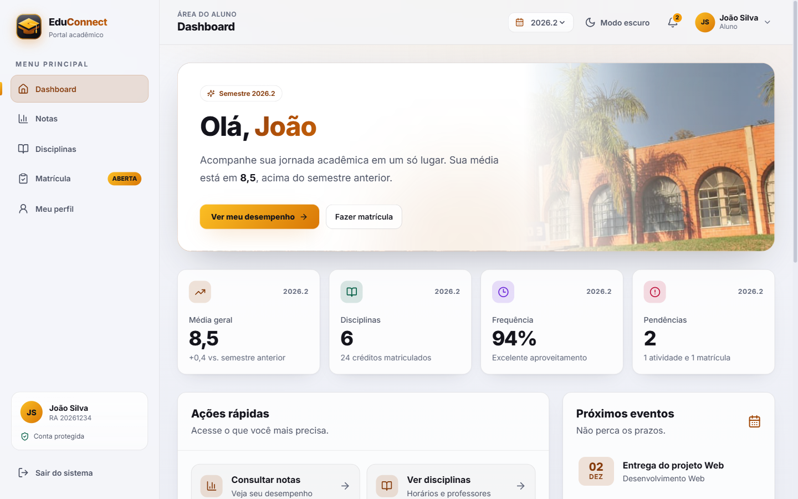
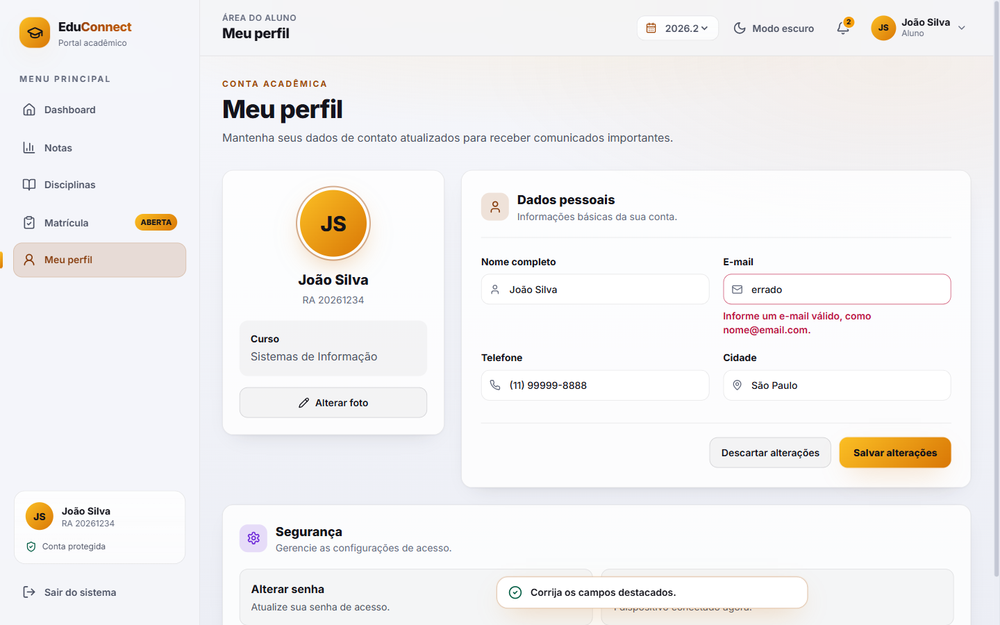
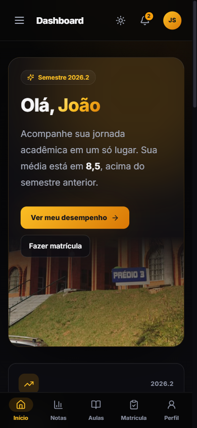
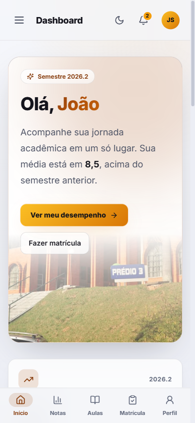
Logo e marca d'água
Foi criada uma logo 3D: um capelo de formatura dourado, com volume (faces laterais, base e borla), sobre uma placa escura com aro metálico. Ela aparece no menu lateral e como ícone da aba do navegador (favicon.svg), e vem em duas versões na pasta logo (ícone e horizontal).
No cartão "Semestre 2026.2" do Dashboard, a foto do campus é a marca d'água de fundo. Um degradê protege somente a área do texto: em telas largas a foto fica à direita e, nas demais, em uma faixa inferior. O contraste do texto contra o pior ponto do fundo foi medido em 8 larguras e nos dois temas, e ficou em 5,14 : 1 ou mais.
4Mudanças justificadas
Cada mudança importante responde à pergunta: "Eu alterei __ porque no site original __. Com a nova proposta, o usuário consegue __."
Antes e depois em telas-chave
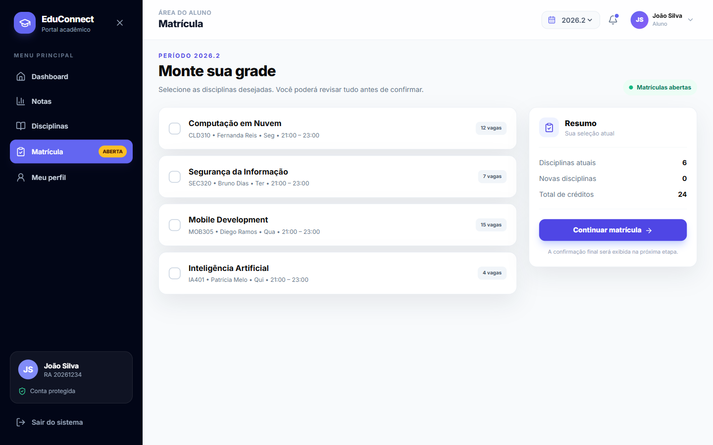
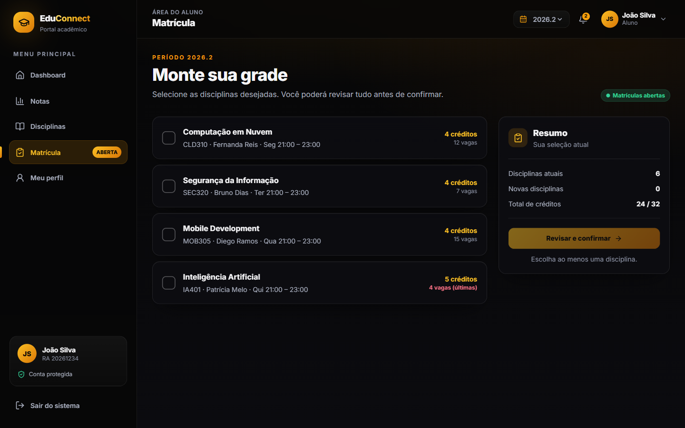
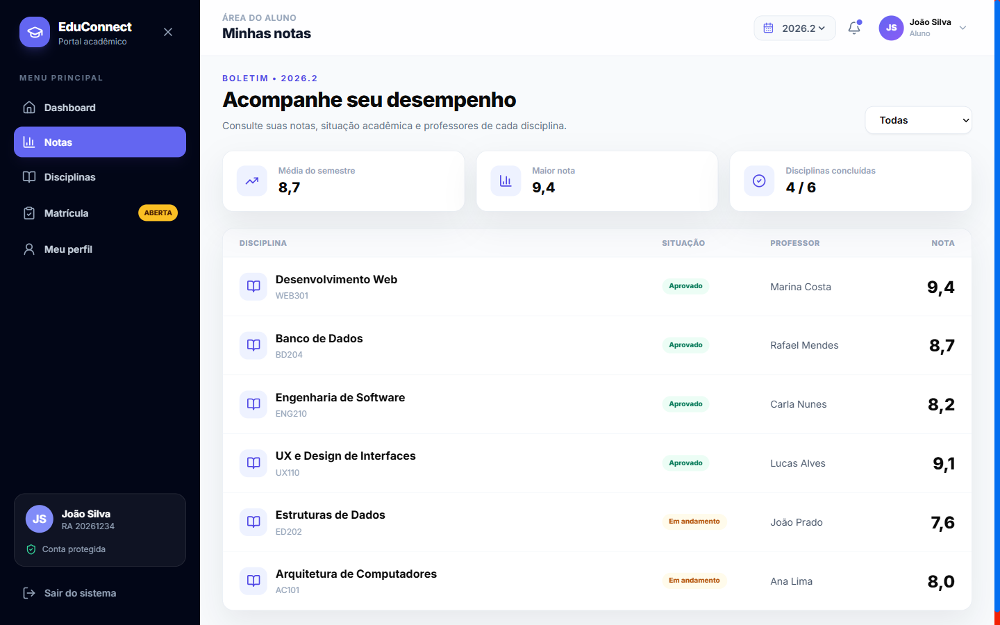
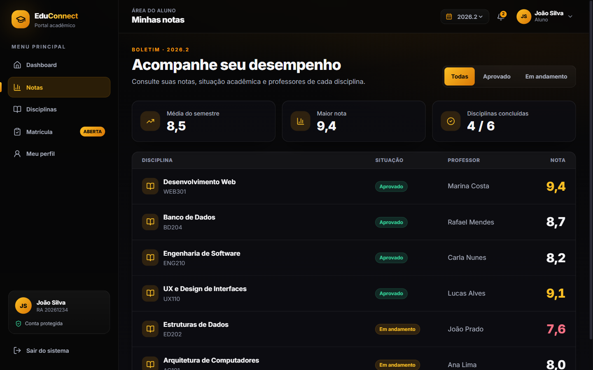
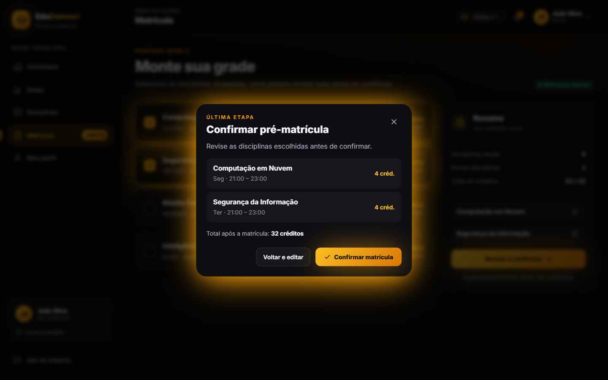
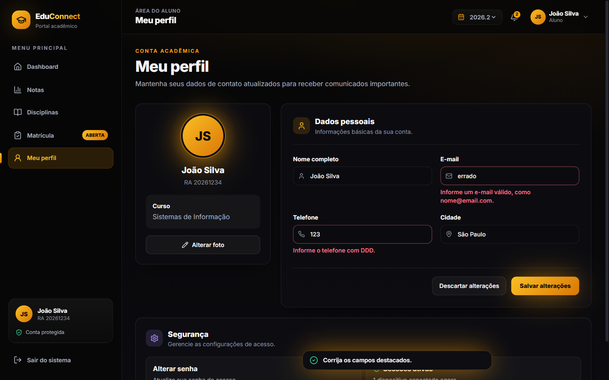
5Layout responsivo
O layout foi pensado em três larguras, reorganizando o conteúdo (e não apenas reduzindo): computador (menu lateral fixo e grades de 2 a 4 colunas), tablet (grades de 2 colunas e menu em gaveta) e celular (uma coluna, navegação inferior com 5 telas e informações de créditos e vagas visíveis dentro de cada cartão).
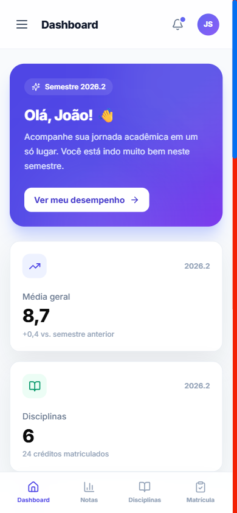

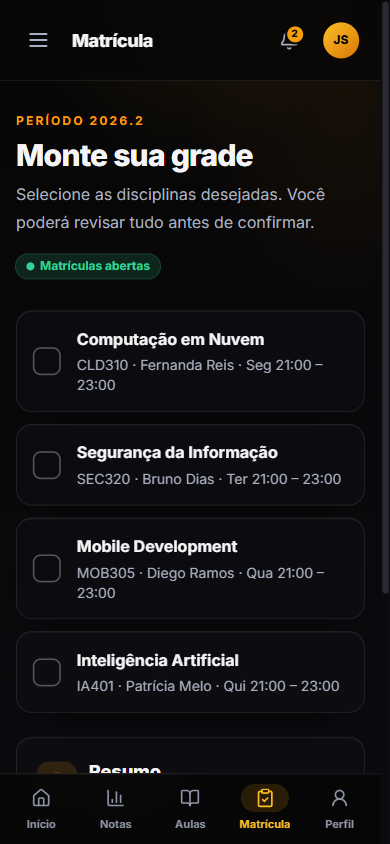
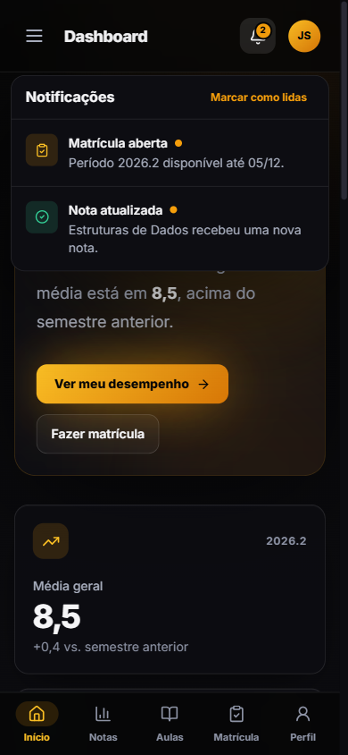
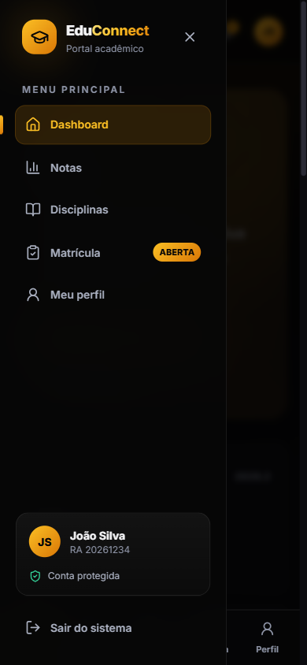
6Acessibilidade e usabilidade
- Contraste: no modo escuro, texto principal 17,80 : 1; auxiliar 8,83 : 1 e 6,32 : 1; botão dourado com texto escuro 5,75 a 10,97 : 1 (do início ao fim do gradiente); alerta 7,20 : 1. No modo claro, todos os tons de texto também ficam acima de 4,5 : 1 (de 4,96 : 1 a 18,32 : 1, conforme a tabela da seção 3).
- Cor nunca sozinha: situação, urgência e erro sempre aparecem com texto ou ícone, além da cor.
- Teclado: foco dourado visível em todos os controles, link "Pular para o conteúdo", Esc fecha menu, painéis e a janela de confirmação, e o foco entra na janela ao abrir.
- Leitor de tela: ícones decorativos ocultos, rótulos em todos os botões de ícone,
aria-currentna página atual,role="alert"nos erros,role="status"nos avisos. - Toque: alvos de pelo menos 44 px.
- Movimento: as animações respeitam a preferência "reduzir movimento" do sistema.
7Funcionalidades mantidas
Todas as funcionalidades do original foram preservadas: as 5 telas, seletor de semestre, notificações, menu do perfil, busca de disciplinas, filtro de notas, seleção de disciplinas na matrícula, perfil editável, avisos (toasts) e dados de demonstração prontos para serem ligados a uma API. Os dados continuam fictícios, como no original.
8Verificações realizadas
- Instalação e build do zero:
npm install(134 pacotes) enpm run build(checagem de tipos e empacotamento) sem erros. - Execução no navegador: as 5 telas abertas, sem erro de página.
- Sem rolagem horizontal em 1440, 820, 390 e 320 px (e no celular nos dois modos).
- Alternância de tema: o botão troca o tema, avisa a mudança, mantém a escolha após recarregar a página e tem 44 × 44 px no celular; o diálogo de confirmação, o formulário com erro e o celular foram conferidos no modo claro.
- Fluxos testados: limite de créditos (3 disciplinas bloqueiam o botão), confirmação da matrícula, Esc na janela, validação do perfil (e-mail e telefone inválidos geram os dois erros), busca sem resultado, menu e notificações no celular.
9Como executar
- Instale o Node.js (versão 18 ou superior).
- Na pasta
educonnect-premium, rodenpm install. - Para desenvolver:
npm run deve abra o endereço mostrado. - Para gerar a versão final:
npm run build(saída emdist/) e, para visualizar,npm run preview.
Estrutura do projeto
| Arquivo | Função |
|---|---|
src/App.tsx | Estado geral, navegação entre telas, avisos |
src/data.ts | Dados de demonstração e funções de cálculo |
src/components/Layout.tsx | Menu lateral, cabeçalho, notificações, navegação do celular, aviso |
src/components/ui.tsx | Componentes reutilizáveis (cartão de indicador, selo, progresso, avatar, estado vazio) |
src/pages/*.tsx | As 5 telas: Dashboard, Notas, Disciplinas, Matrícula e Perfil |
src/index.css e tailwind.config.js | Tokens visuais (cores, sombras, animações, utilitários) |